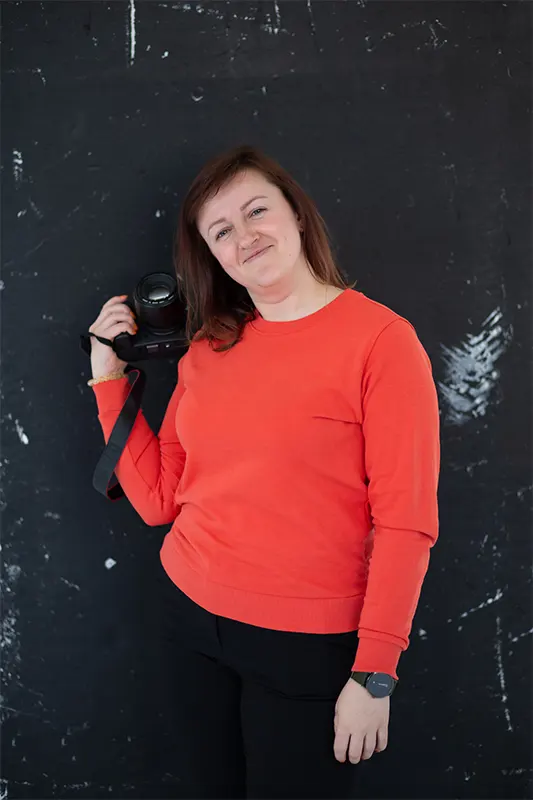

<div class="container">
  <div class="row">
    <div class="col-md-7">
      <h3 class="text-center mt-5">Labas, aš Giedrė,</h3>
      <h3 class="text-center mt-3 mb-3">Gera, kad užsukai!</h3>
      <p class="text-align">
        Sakoma, kad gražiausi dalykai pasaulyje nematomi ir negirdimi, tačiau
        jaučiami širdimi. Gyvenime man pasisekė, kad galiu dovanoti džiaugsmą
        per fotografiją. Man tai priemonė išreikšti savo kūrybiškumą, suteikiant
        estetinį malonumą. Myliu fotografiją ir esu dėkinga už galimybę,
        pasitikėjimą ir laisvę kurti bei prisiliesti prie kiekvienos asmenybės
        vidaus.
      </p>
      <br />
      <p class="text-align">
        Nuo pat vaikystės fiksuoju vaizdus akimis. Gavusi pirmąjį nepilno kadro
        fotoaparatą dovanų, leidausi į nuostabią fotografijos kelionę.
        Didžiausią aistrą jaučiu reportažinėje fotografijoje, kurioje fiksuoju
        natūralias, tikras ir išraiškingas akimirkas, kupinas jausmo ir
        emocijos. Juk nuotraukos ne tik matomos, bet ir jaučiamos!
      </p>
      <br />
      <p class="text-align">
        Iš aplinkos nuolat jaučiau palaikymą ir skatinimą siekti vis geresnių
        rezultatų. Šis palaikymas man labai svarbus iki šiol. Jaučiu begalinį
        dėkingumą kiekvienam prisidedančiam prie mano kūrybinio ir asmenybinio
        augimo šiame kelyje.
      </p>
      <br />
      <p>
        Fotografija turi galimybę kalbėti tyliai, tačiau galingai! O kaip tu
        manai?
      </p>
    </div>
    <div class="col-md-5 my-5">
      
    </div>
  </div>
</div>
